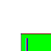
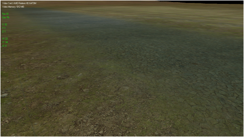

Tutorial 9: Terrain Blending

This DirectX 11 terrain tutorial will cover how to blend textures on terrain using alpha maps to create a smooth transition between different textures. The code in this tutorial is based on the color mapping tutorial.
To blend textures on terrain we use the same principles as were discussed in the DirectX alpha mapping tutorial. We take two color textures and blend them together on a pixel by pixel basis using the alpha map texture as the blending value. Now to do this on a large terrain requires quite a few different alpha maps to achieve different texture transitions. It will also require a number of different textures to create the look we are going for. A combination of two textures and a alpha map will be referred to as a material.
For each material we will want to just set the two textures and alpha map once and then draw all the terrain associated with this material. To do this we will need to break the terrain into vertex buffers based on materials. The combination of the material and its vertex/index buffer will be called a material group. You have seen this same kind of thing in the quad tree tutorial where we broke the terrain into buffers for each node, this is the same thing except for materials.
To setup a material based rendering system for terrain we will first need a text file containing all the textures and alpha maps that will be used for the terrain. This file will also contain the list of materials which is just a combination of those same textures and alpha maps. Here is the example one we use for this tutorial:
Texture Count: 7 0: ../Engine/data/texture01.dds 1: ../Engine/data/texture02.dds 2: ../Engine/data/texture03.dds 3: ../Engine/data/alpha01.dds 4: ../Engine/data/alpha02.dds 5: ../Engine/data/alpha03.dds 6: ../Engine/data/alpha04.dds Material Count: 8 0: 0 -1 -1 0 255 0 1: 1 -1 -1 255 0 0 2: 1 0 4 0 0 255 3: 1 0 3 0 255 255 4: 2 -1 -1 255 255 255 5: 0 2 3 128 128 128 6: 0 2 5 128 0 0 7: 0 2 6 0 0 128
As you can see it starts with a texture count and then lists all the textures and alpha maps that should be loaded and used in the terrain rendering. The second portion is where the materials are defined. It starts with a material count and then lists each material defined by indexes. The first index is the first texture. For example if the index is 1 then it is referring to the texture02.dds file. The second index is the texture to blend with, it works the same way except that if it is defined as -1 then it means this material does not blend and is just the texture by itself. The third index is the alpha map. For example if the third index is 3 then it refers to the alpha01.dds alpha map.
The last three numbers are a red, green, blue index. They are used together to define a color that represents this particular material. So for example the first material is 0, 255, 0 which means the material is defined by green. Now what we do is use a bitmap with each of the colors as an index and location where the material should be rendered on the terrain. For this tutorial we will use the following bitmap as our material map:

Now you can that the green is the lower right section in the material map. So every quad in the terrain in that lower right section would use the first material. You can also see the top left section is mostly white, which means that material 4 which is defined by 255, 255, 255 would be used to render to those parts of the terrain. There are also thin lines along the borders which are usually a alpha map between the two textures so they transition by blending between the two materials of the two regions.
The main reason for using this is because it gives you or the artist 100% control of how the terrain will look. Most procedural methods usually use some kind of slope and height equation which works well for uninhabited areas that have general terrain. But anything that is inhabited or has unique features to it will require a way to define those features. Using a material map is one of the easier ways to do so.
Also note that most programmers will build a separate terrain creation tool which does this inside the tool and then exports everything as models so the vertex buffers are already prepared in advance and easy to load into the engine. I am doing it inside the engine for this tutorial so you can see how it works without the need to explain a terrain generation tool also. And like usual this tutorial is not optimized so it is easier to read and understand how it works and then you can optimize it later for your own needs.
We will start the code section of the tutorial by looking at the changes to the HLSL shader files.
Terrain.vs
The terrain vertex shader remains the same as it was in the color mapping tutorial.
////////////////////////////////////////////////////////////////////////////////
// Filename: terrain.vs
////////////////////////////////////////////////////////////////////////////////
/////////////
// GLOBALS //
/////////////
cbuffer MatrixBuffer
{
matrix worldMatrix;
matrix viewMatrix;
matrix projectionMatrix;
};
//////////////
// TYPEDEFS //
//////////////
struct VertexInputType
{
float4 position : POSITION;
float2 tex : TEXCOORD0;
float3 normal : NORMAL;
float4 color : COLOR;
};
struct PixelInputType
{
float4 position : SV_POSITION;
float2 tex : TEXCOORD0;
float3 normal : NORMAL;
float4 color : COLOR;
};
////////////////////////////////////////////////////////////////////////////////
// Vertex Shader
////////////////////////////////////////////////////////////////////////////////
PixelInputType TerrainVertexShader(VertexInputType input)
{
PixelInputType output;
// Change the position vector to be 4 units for proper matrix calculations.
input.position.w = 1.0f;
// Calculate the position of the vertex against the world, view, and projection matrices.
output.position = mul(input.position, worldMatrix);
output.position = mul(output.position, viewMatrix);
output.position = mul(output.position, projectionMatrix);
// Store the texture coordinates for the pixel shader.
output.tex = input.tex;
// Calculate the normal vector against the world matrix only.
output.normal = mul(input.normal, (float3x3)worldMatrix);
// Normalize the normal vector.
output.normal = normalize(output.normal);
// Send the color map color into the pixel shader.
output.color = input.color;
return output;
}
Terrain.ps
//////////////////////////////////////////////////////////////////////////////// // Filename: terrain.ps //////////////////////////////////////////////////////////////////////////////// ///////////// // GLOBALS // /////////////
We have three textures for the terrain pixel shader. The first two are the two color textures that will be blended together. The third texture is the alpha map which will be used to determine how the two color textures are blended together.
Texture2D shaderTexture1 : register(t0);
Texture2D shaderTexture2 : register(t1);
Texture2D alphaMap : register(t2);
SamplerState SampleType;
cbuffer LightBuffer
{
float4 ambientColor;
float4 diffuseColor;
float3 lightDirection;
float padding;
};
There is a new buffer to hold the boolean value indicating if the textures should be blended together or if only one should be rendered with no blending.
cbuffer TextureInfoBuffer
{
bool useAlplha;
float3 padding2;
};
//////////////
// TYPEDEFS //
//////////////
struct PixelInputType
{
float4 position : SV_POSITION;
float2 tex : TEXCOORD0;
float3 normal : NORMAL;
float4 color : COLOR;
};
////////////////////////////////////////////////////////////////////////////////
// Pixel Shader
////////////////////////////////////////////////////////////////////////////////
float4 TerrainPixelShader(PixelInputType input) : SV_TARGET
{
float4 color;
float3 lightDir;
float lightIntensity;
float4 textureColor1;
float4 textureColor2;
float4 alphaValue;
float4 blendColor;
// Set the default output color to the ambient light value for all pixels.
color = ambientColor;
// Invert the light direction for calculations.
lightDir = -lightDirection;
// Calculate the amount of light on this pixel.
lightIntensity = saturate(dot(input.normal, lightDir));
if(lightIntensity > 0.0f)
{
// Determine the final diffuse color based on the diffuse color and the amount of light intensity.
color += (diffuseColor * lightIntensity);
}
// Saturate the final light color.
color = saturate(color);
If the boolean value indicates to blend then we first sample the two color textures and the alpha map. After that we blend the two color textures together based on the alpha value in the alpha map. This type of blending was covered in the DirectX blending tutorials.
if(useAlplha)
{
// Sample the pixel color from the first texture using the sampler at this texture coordinate location.
textureColor1 = shaderTexture1.Sample(SampleType, input.tex);
// Sample the pixel color from the second texture using the sampler at this texture coordinate location.
textureColor2 = shaderTexture2.Sample(SampleType, input.tex);
// Sample the alpha blending value.
alphaValue = alphaMap.Sample(SampleType, input.tex);
// Alpha blend the two colors together based on the alpha value.
blendColor = (alphaValue * textureColor2) + ((1.0 - alphaValue) * textureColor1);
}
If the boolean value indicates that we should not blend then we just sample the first color texture and use that as the texture color value.
else
{
// Use the pixel color from the first texture only.
blendColor = shaderTexture1.Sample(SampleType, input.tex);
}
We then combine the light color and the blended texture value.
// Multiply the blended texture color and the final light color to get the result.
color = color * blendColor;
// Combine the color map value into the final color.
color = saturate(color * input.color * 2.0f);
return color;
}
Terrainshaderclass.h
////////////////////////////////////////////////////////////////////////////////
// Filename: terrainshaderclass.h
////////////////////////////////////////////////////////////////////////////////
#ifndef _TERRAINSHADERCLASS_H_
#define _TERRAINSHADERCLASS_H_
//////////////
// INCLUDES //
//////////////
#include <d3d11.h>
#include <d3dx10math.h>
#include <d3dx11async.h>
#include <fstream>
using namespace std;
////////////////////////////////////////////////////////////////////////////////
// Class name: TerrainShaderClass
////////////////////////////////////////////////////////////////////////////////
class TerrainShaderClass
{
private:
struct MatrixBufferType
{
D3DXMATRIX world;
D3DXMATRIX view;
D3DXMATRIX projection;
};
struct LightBufferType
{
D3DXVECTOR4 ambientColor;
D3DXVECTOR4 diffuseColor;
D3DXVECTOR3 lightDirection;
float padding;
};
A new buffer has been added to hold the boolean value indicating if the terrain textures should be blended or not for each polygon.
struct TextureInfoBufferType
{
bool useAlplha;
D3DXVECTOR3 padding2;
};
public:
TerrainShaderClass();
TerrainShaderClass(const TerrainShaderClass&);
~TerrainShaderClass();
bool Initialize(ID3D11Device*, HWND);
void Shutdown();
The Render function has been removed and the RenderShader function was made public. Also the SetShaderParameters private function has been divided into two public functions. This was done so the terrain could be efficiently rendered by only setting certain variables once while being able to change the textures often.
bool SetShaderParameters(ID3D11DeviceContext*, D3DXMATRIX, D3DXMATRIX, D3DXMATRIX, D3DXVECTOR4, D3DXVECTOR4, D3DXVECTOR3); bool SetShaderTextures(ID3D11DeviceContext*, ID3D11ShaderResourceView*, ID3D11ShaderResourceView*, ID3D11ShaderResourceView*, bool); void RenderShader(ID3D11DeviceContext*, int); private: bool InitializeShader(ID3D11Device*, HWND, WCHAR*, WCHAR*); void ShutdownShader(); void OutputShaderErrorMessage(ID3D10Blob*, HWND, WCHAR*); private: ID3D11VertexShader* m_vertexShader; ID3D11PixelShader* m_pixelShader; ID3D11InputLayout* m_layout; ID3D11SamplerState* m_sampleState; ID3D11Buffer* m_matrixBuffer; ID3D11Buffer* m_lightBuffer;
This is the new texture information buffer.
ID3D11Buffer* m_textureInfoBuffer; }; #endif
Terrainshaderclass.cpp
////////////////////////////////////////////////////////////////////////////////
// Filename: terrainshaderclass.cpp
////////////////////////////////////////////////////////////////////////////////
#include "terrainshaderclass.h"
TerrainShaderClass::TerrainShaderClass()
{
m_vertexShader = 0;
m_pixelShader = 0;
m_layout = 0;
m_sampleState = 0;
m_matrixBuffer = 0;
m_lightBuffer = 0;
Initialize the texture information buffer to null in the class constructor.
m_textureInfoBuffer = 0;
}
TerrainShaderClass::TerrainShaderClass(const TerrainShaderClass& other)
{
}
TerrainShaderClass::~TerrainShaderClass()
{
}
bool TerrainShaderClass::Initialize(ID3D11Device* device, HWND hwnd)
{
bool result;
// Initialize the vertex and pixel shaders.
result = InitializeShader(device, hwnd, L"../Engine/terrain.vs", L"../Engine/terrain.ps");
if(!result)
{
return false;
}
return true;
}
void TerrainShaderClass::Shutdown()
{
// Shutdown the vertex and pixel shaders as well as the related objects.
ShutdownShader();
return;
}
bool TerrainShaderClass::InitializeShader(ID3D11Device* device, HWND hwnd, WCHAR* vsFilename, WCHAR* psFilename)
{
HRESULT result;
ID3D10Blob* errorMessage;
ID3D10Blob* vertexShaderBuffer;
ID3D10Blob* pixelShaderBuffer;
D3D11_INPUT_ELEMENT_DESC polygonLayout[4];
unsigned int numElements;
D3D11_SAMPLER_DESC samplerDesc;
D3D11_BUFFER_DESC matrixBufferDesc;
D3D11_BUFFER_DESC lightBufferDesc;
A new buffer description variable is added for the texture information buffer.
D3D11_BUFFER_DESC textureInfoBufferDesc;
// Initialize the pointers this function will use to null.
errorMessage = 0;
vertexShaderBuffer = 0;
pixelShaderBuffer = 0;
// Compile the vertex shader code.
result = D3DX11CompileFromFile(vsFilename, NULL, NULL, "TerrainVertexShader", "vs_5_0", D3D10_SHADER_ENABLE_STRICTNESS, 0, NULL,
&vertexShaderBuffer, &errorMessage, NULL);
if(FAILED(result))
{
// If the shader failed to compile it should have writen something to the error message.
if(errorMessage)
{
OutputShaderErrorMessage(errorMessage, hwnd, vsFilename);
}
// If there was nothing in the error message then it simply could not find the shader file itself.
else
{
MessageBox(hwnd, vsFilename, L"Missing Shader File", MB_OK);
}
return false;
}
// Compile the pixel shader code.
result = D3DX11CompileFromFile(psFilename, NULL, NULL, "TerrainPixelShader", "ps_5_0", D3D10_SHADER_ENABLE_STRICTNESS, 0, NULL,
&pixelShaderBuffer, &errorMessage, NULL);
if(FAILED(result))
{
// If the shader failed to compile it should have writen something to the error message.
if(errorMessage)
{
OutputShaderErrorMessage(errorMessage, hwnd, psFilename);
}
// If there was nothing in the error message then it simply could not find the file itself.
else
{
MessageBox(hwnd, psFilename, L"Missing Shader File", MB_OK);
}
return false;
}
// Create the vertex shader from the buffer.
result = device->CreateVertexShader(vertexShaderBuffer->GetBufferPointer(), vertexShaderBuffer->GetBufferSize(), NULL, &m_vertexShader);
if(FAILED(result))
{
return false;
}
// Create the pixel shader from the buffer.
result = device->CreatePixelShader(pixelShaderBuffer->GetBufferPointer(), pixelShaderBuffer->GetBufferSize(), NULL, &m_pixelShader);
if(FAILED(result))
{
return false;
}
// Create the vertex input layout description.
polygonLayout[0].SemanticName = "POSITION";
polygonLayout[0].SemanticIndex = 0;
polygonLayout[0].Format = DXGI_FORMAT_R32G32B32_FLOAT;
polygonLayout[0].InputSlot = 0;
polygonLayout[0].AlignedByteOffset = 0;
polygonLayout[0].InputSlotClass = D3D11_INPUT_PER_VERTEX_DATA;
polygonLayout[0].InstanceDataStepRate = 0;
polygonLayout[1].SemanticName = "TEXCOORD";
polygonLayout[1].SemanticIndex = 0;
polygonLayout[1].Format = DXGI_FORMAT_R32G32_FLOAT;
polygonLayout[1].InputSlot = 0;
polygonLayout[1].AlignedByteOffset = D3D11_APPEND_ALIGNED_ELEMENT;
polygonLayout[1].InputSlotClass = D3D11_INPUT_PER_VERTEX_DATA;
polygonLayout[1].InstanceDataStepRate = 0;
polygonLayout[2].SemanticName = "NORMAL";
polygonLayout[2].SemanticIndex = 0;
polygonLayout[2].Format = DXGI_FORMAT_R32G32B32_FLOAT;
polygonLayout[2].InputSlot = 0;
polygonLayout[2].AlignedByteOffset = D3D11_APPEND_ALIGNED_ELEMENT;
polygonLayout[2].InputSlotClass = D3D11_INPUT_PER_VERTEX_DATA;
polygonLayout[2].InstanceDataStepRate = 0;
polygonLayout[3].SemanticName = "COLOR";
polygonLayout[3].SemanticIndex = 0;
polygonLayout[3].Format = DXGI_FORMAT_R32G32B32A32_FLOAT;
polygonLayout[3].InputSlot = 0;
polygonLayout[3].AlignedByteOffset = D3D11_APPEND_ALIGNED_ELEMENT;
polygonLayout[3].InputSlotClass = D3D11_INPUT_PER_VERTEX_DATA;
polygonLayout[3].InstanceDataStepRate = 0;
// Get a count of the elements in the layout.
numElements = sizeof(polygonLayout) / sizeof(polygonLayout[0]);
// Create the vertex input layout.
result = device->CreateInputLayout(polygonLayout, numElements, vertexShaderBuffer->GetBufferPointer(), vertexShaderBuffer->GetBufferSize(),
&m_layout);
if(FAILED(result))
{
return false;
}
// Release the vertex shader buffer and pixel shader buffer since they are no longer needed.
vertexShaderBuffer->Release();
vertexShaderBuffer = 0;
pixelShaderBuffer->Release();
pixelShaderBuffer = 0;
// Create a texture sampler state description.
samplerDesc.Filter = D3D11_FILTER_MIN_MAG_MIP_LINEAR;
samplerDesc.AddressU = D3D11_TEXTURE_ADDRESS_WRAP;
samplerDesc.AddressV = D3D11_TEXTURE_ADDRESS_WRAP;
samplerDesc.AddressW = D3D11_TEXTURE_ADDRESS_WRAP;
samplerDesc.MipLODBias = 0.0f;
samplerDesc.MaxAnisotropy = 1;
samplerDesc.ComparisonFunc = D3D11_COMPARISON_ALWAYS;
samplerDesc.BorderColor[0] = 0;
samplerDesc.BorderColor[1] = 0;
samplerDesc.BorderColor[2] = 0;
samplerDesc.BorderColor[3] = 0;
samplerDesc.MinLOD = 0;
samplerDesc.MaxLOD = D3D11_FLOAT32_MAX;
// Create the texture sampler state.
result = device->CreateSamplerState(&samplerDesc, &m_sampleState);
if(FAILED(result))
{
return false;
}
// Setup the description of the dynamic matrix constant buffer that is in the vertex shader.
matrixBufferDesc.Usage = D3D11_USAGE_DYNAMIC;
matrixBufferDesc.ByteWidth = sizeof(MatrixBufferType);
matrixBufferDesc.BindFlags = D3D11_BIND_CONSTANT_BUFFER;
matrixBufferDesc.CPUAccessFlags = D3D11_CPU_ACCESS_WRITE;
matrixBufferDesc.MiscFlags = 0;
matrixBufferDesc.StructureByteStride = 0;
// Create the constant buffer pointer so we can access the vertex shader constant buffer from within this class.
result = device->CreateBuffer(&matrixBufferDesc, NULL, &m_matrixBuffer);
if(FAILED(result))
{
return false;
}
// Setup the description of the light dynamic constant buffer that is in the pixel shader.
// Note that ByteWidth always needs to be a multiple of 16 if using D3D11_BIND_CONSTANT_BUFFER or CreateBuffer will fail.
lightBufferDesc.Usage = D3D11_USAGE_DYNAMIC;
lightBufferDesc.ByteWidth = sizeof(LightBufferType);
lightBufferDesc.BindFlags = D3D11_BIND_CONSTANT_BUFFER;
lightBufferDesc.CPUAccessFlags = D3D11_CPU_ACCESS_WRITE;
lightBufferDesc.MiscFlags = 0;
lightBufferDesc.StructureByteStride = 0;
// Create the constant buffer pointer so we can access the pixel shader constant buffer from within this class.
result = device->CreateBuffer(&lightBufferDesc, NULL, &m_lightBuffer);
if(FAILED(result))
{
return false;
}
The new texture information buffer description is setup here.
// Setup the description of the texture info constant buffer that is in the pixel shader. textureInfoBufferDesc.Usage = D3D11_USAGE_DYNAMIC; textureInfoBufferDesc.ByteWidth = sizeof(TextureInfoBufferType); textureInfoBufferDesc.BindFlags = D3D11_BIND_CONSTANT_BUFFER; textureInfoBufferDesc.CPUAccessFlags = D3D11_CPU_ACCESS_WRITE; textureInfoBufferDesc.MiscFlags = 0; textureInfoBufferDesc.StructureByteStride = 0;
Once the description is setup the texture information buffer is then created.
// Create the constant buffer pointer so we can access the pixel shader constant buffer from within this class.
result = device->CreateBuffer(&textureInfoBufferDesc, NULL, &m_textureInfoBuffer);
if(FAILED(result))
{
return false;
}
return true;
}
void TerrainShaderClass::ShutdownShader()
{
The texture information buffer is released here in the ShutdownShader function.
// Release the texture info constant buffer.
if(m_textureInfoBuffer)
{
m_textureInfoBuffer->Release();
m_textureInfoBuffer = 0;
}
// Release the light constant buffer.
if(m_lightBuffer)
{
m_lightBuffer->Release();
m_lightBuffer = 0;
}
// Release the matrix constant buffer.
if(m_matrixBuffer)
{
m_matrixBuffer->Release();
m_matrixBuffer = 0;
}
// Release the sampler state.
if(m_sampleState)
{
m_sampleState->Release();
m_sampleState = 0;
}
// Release the layout.
if(m_layout)
{
m_layout->Release();
m_layout = 0;
}
// Release the pixel shader.
if(m_pixelShader)
{
m_pixelShader->Release();
m_pixelShader = 0;
}
// Release the vertex shader.
if(m_vertexShader)
{
m_vertexShader->Release();
m_vertexShader = 0;
}
return;
}
void TerrainShaderClass::OutputShaderErrorMessage(ID3D10Blob* errorMessage, HWND hwnd, WCHAR* shaderFilename)
{
char* compileErrors;
unsigned long bufferSize, i;
ofstream fout;
// Get a pointer to the error message text buffer.
compileErrors = (char*)(errorMessage->GetBufferPointer());
// Get the length of the message.
bufferSize = errorMessage->GetBufferSize();
// Open a file to write the error message to.
fout.open("shader-error.txt");
// Write out the error message.
for(i=0; i<bufferSize; i++)
{
fout << compileErrors[i];
}
// Close the file.
fout.close();
// Release the error message.
errorMessage->Release();
errorMessage = 0;
// Pop a message up on the screen to notify the user to check the text file for compile errors.
MessageBox(hwnd, L"Error compiling shader. Check shader-error.txt for message.", shaderFilename, MB_OK);
return;
}
The setting of textures has been removed from the SetShaderParameters function.
bool TerrainShaderClass::SetShaderParameters(ID3D11DeviceContext* deviceContext, D3DXMATRIX worldMatrix, D3DXMATRIX viewMatrix,
D3DXMATRIX projectionMatrix, D3DXVECTOR4 ambientColor, D3DXVECTOR4 diffuseColor, D3DXVECTOR3 lightDirection)
{
HRESULT result;
D3D11_MAPPED_SUBRESOURCE mappedResource;
unsigned int bufferNumber;
MatrixBufferType* dataPtr;
LightBufferType* dataPtr2;
// Transpose the matrices to prepare them for the shader.
D3DXMatrixTranspose(&worldMatrix, &worldMatrix);
D3DXMatrixTranspose(&viewMatrix, &viewMatrix);
D3DXMatrixTranspose(&projectionMatrix, &projectionMatrix);
// Lock the constant buffer so it can be written to.
result = deviceContext->Map(m_matrixBuffer, 0, D3D11_MAP_WRITE_DISCARD, 0, &mappedResource);
if(FAILED(result))
{
return false;
}
// Get a pointer to the data in the constant buffer.
dataPtr = (MatrixBufferType*)mappedResource.pData;
// Copy the matrices into the constant buffer.
dataPtr->world = worldMatrix;
dataPtr->view = viewMatrix;
dataPtr->projection = projectionMatrix;
// Unlock the constant buffer.
deviceContext->Unmap(m_matrixBuffer, 0);
// Set the position of the constant buffer in the vertex shader.
bufferNumber = 0;
// Now set the constant buffer in the vertex shader with the updated values.
deviceContext->VSSetConstantBuffers(bufferNumber, 1, &m_matrixBuffer);
// Lock the light constant buffer so it can be written to.
result = deviceContext->Map(m_lightBuffer, 0, D3D11_MAP_WRITE_DISCARD, 0, &mappedResource);
if(FAILED(result))
{
return false;
}
// Get a pointer to the data in the constant buffer.
dataPtr2 = (LightBufferType*)mappedResource.pData;
// Copy the lighting variables into the constant buffer.
dataPtr2->ambientColor = ambientColor;
dataPtr2->diffuseColor = diffuseColor;
dataPtr2->lightDirection = lightDirection;
dataPtr2->padding = 0.0f;
// Unlock the constant buffer.
deviceContext->Unmap(m_lightBuffer, 0);
// Set the position of the light constant buffer in the pixel shader.
bufferNumber = 0;
// Finally set the light constant buffer in the pixel shader with the updated values.
deviceContext->PSSetConstantBuffers(bufferNumber, 1, &m_lightBuffer);
return true;
}
SetShaderTextures is a new function which is used for setting textures in the shader. It was separated from the SetShaderParameters function so the setting of textures could happen more often.
bool TerrainShaderClass::SetShaderTextures(ID3D11DeviceContext* deviceContext, ID3D11ShaderResourceView* texture1,
ID3D11ShaderResourceView* texture2, ID3D11ShaderResourceView* alphaMap, bool useAlpha)
{
HRESULT result;
D3D11_MAPPED_SUBRESOURCE mappedResource;
TextureInfoBufferType* dataPtr;
unsigned int bufferNumber;
The primary texture is set in the pixel shader first.
// Set shader texture resources in the pixel shader. deviceContext->PSSetShaderResources(0, 1, &texture1);
If this material group uses blending then set the second color texture and the alpha map in the shader so blending can occur.
// If this is a blended polygon then also set the second texture and the alpha map for blending.
if(useAlpha)
{
deviceContext->PSSetShaderResources(1, 1, &texture2);
deviceContext->PSSetShaderResources(2, 1, &alphaMap);
}
Now set the boolean value in the shader letting it know to blend or not.
// Lock the texture info constant buffer so it can be written to.
result = deviceContext->Map(m_textureInfoBuffer, 0, D3D11_MAP_WRITE_DISCARD, 0, &mappedResource);
if(FAILED(result))
{
return false;
}
// Get a pointer to the data in the constant buffer.
dataPtr = (TextureInfoBufferType*)mappedResource.pData;
// Copy the texture info variables into the constant buffer.
dataPtr->useAlplha = useAlpha;
dataPtr->padding2 = D3DXVECTOR3(0.0f, 0.0f, 0.0f);
// Unlock the constant buffer.
deviceContext->Unmap(m_textureInfoBuffer, 0);
// Set the position of the texture info constant buffer in the pixel shader.
bufferNumber = 1;
// Finally set the texture info constant buffer in the pixel shader with the updated values.
deviceContext->PSSetConstantBuffers(bufferNumber, 1, &m_textureInfoBuffer);
return true;
}
void TerrainShaderClass::RenderShader(ID3D11DeviceContext* deviceContext, int indexCount)
{
// Set the vertex input layout.
deviceContext->IASetInputLayout(m_layout);
// Set the vertex and pixel shaders that will be used to render this triangle.
deviceContext->VSSetShader(m_vertexShader, NULL, 0);
deviceContext->PSSetShader(m_pixelShader, NULL, 0);
// Set the sampler state in the pixel shader.
deviceContext->PSSetSamplers(0, 1, &m_sampleState);
// Render the triangle.
deviceContext->DrawIndexed(indexCount, 0, 0);
return;
}
Terrainclass.h
////////////////////////////////////////////////////////////////////////////////
// Filename: terrainclass.h
////////////////////////////////////////////////////////////////////////////////
#ifndef _TERRAINCLASS_H_
#define _TERRAINCLASS_H_
//////////////
// INCLUDES //
//////////////
#include <d3d11.h>
#include <d3dx10math.h>
#include <stdio.h>
#include <fstream>
using namespace std;
///////////////////////
// MY CLASS INCLUDES //
///////////////////////
#include "textureclass.h"
#include "terrainshaderclass.h"
////////////////////////////////////////////////////////////////////////////////
// Class name: TerrainClass
////////////////////////////////////////////////////////////////////////////////
class TerrainClass
{
private:
struct VertexType
{
D3DXVECTOR3 position;
D3DXVECTOR2 texture;
D3DXVECTOR3 normal;
D3DXVECTOR4 color;
};
The height map type has been modified and has a red, green, and blue index. The indices are used to indicate which material is used for each polygon in the terrain. The red, green, and blue index will match up to the colors in the material map.
struct HeightMapType
{
float x, y, z;
float nx, ny, nz;
float r, g, b;
int rIndex, gIndex, bIndex;
};
struct VectorType
{
float x, y, z;
};
This is the new structure for the material groups. The material group is made up of indexes to the two textures and the alpha map for that group. It also has red, green, and blue indexes to match up to the material map. It has a vertex and index buffer to hold the polygon data from the terrain in each group instead of just one large single buffer. It also has a temporary vertex and index array used for building the vertex and index buffers.
struct MaterialGroupType
{
int textureIndex1, textureIndex2, alphaIndex;
int red, green, blue;
ID3D11Buffer *vertexBuffer, *indexBuffer;
int vertexCount, indexCount;
VertexType* vertices;
unsigned long* indices;
};
public:
TerrainClass();
TerrainClass(const TerrainClass&);
~TerrainClass();
bool Initialize(ID3D11Device*, char*, char*, char*, char*);
void Shutdown();
bool Render(ID3D11DeviceContext*, TerrainShaderClass*, D3DXMATRIX, D3DXMATRIX, D3DXMATRIX, D3DXVECTOR4, D3DXVECTOR4, D3DXVECTOR3);
private:
bool LoadHeightMap(char*);
void NormalizeHeightMap();
bool CalculateNormals();
void ShutdownHeightMap();
bool LoadColorMap(char*);
There are new functions for loading and unloading the material groups.
bool LoadMaterialFile(char*, char*, ID3D11Device*); bool LoadMaterialMap(char*); bool LoadMaterialBuffers(ID3D11Device*); void ReleaseMaterials(); private: int m_terrainWidth, m_terrainHeight; HeightMapType* m_heightMap;
There are new variables for the texture array and material group arrays.
int m_textureCount, m_materialCount; TextureClass* m_Textures; MaterialGroupType* m_Materials; }; #endif
Terrainclass.cpp
////////////////////////////////////////////////////////////////////////////////
// Filename: terrainclass.cpp
////////////////////////////////////////////////////////////////////////////////
#include "terrainclass.h"
TerrainClass::TerrainClass()
{
m_heightMap = 0;
Initialize the texture array and material group array to null in the class constructor.
m_Textures = 0;
m_Materials = 0;
}
TerrainClass::TerrainClass(const TerrainClass& other)
{
}
TerrainClass::~TerrainClass()
{
}
bool TerrainClass::Initialize(ID3D11Device* device, char* heightMapFilename, char* materialsFilename, char* materialMapFilename, char* colorMapFilename)
{
bool result;
// Load in the height map for the terrain.
result = LoadHeightMap(heightMapFilename);
if(!result)
{
return false;
}
// Normalize the height of the height map.
NormalizeHeightMap();
// Calculate the normals for the terrain data.
result = CalculateNormals();
if(!result)
{
return false;
}
// Load in the color map for the terrain.
result = LoadColorMap(colorMapFilename);
if(!result)
{
return false;
}
The material groups array is initialized instead of the single vertex and index buffer. Each material group will have its own vertex and index array with its own set of textures.
// Initialize the material groups for the terrain.
result = LoadMaterialFile(materialsFilename, materialMapFilename, device);
if(!result)
{
return false;
}
return true;
}
void TerrainClass::Shutdown()
{
When the shutdown occurs the material groups array is also released now.
// Release the materials for the terrain.
ReleaseMaterials();
// Release the height map data.
ShutdownHeightMap();
return;
}
bool TerrainClass::LoadHeightMap(char* filename)
{
FILE* filePtr;
int error;
unsigned int count;
BITMAPFILEHEADER bitmapFileHeader;
BITMAPINFOHEADER bitmapInfoHeader;
int imageSize, i, j, k, index;
unsigned char* bitmapImage;
unsigned char height;
// Open the height map file in binary.
error = fopen_s(&filePtr, filename, "rb");
if(error != 0)
{
return false;
}
// Read in the file header.
count = fread(&bitmapFileHeader, sizeof(BITMAPFILEHEADER), 1, filePtr);
if(count != 1)
{
return false;
}
// Read in the bitmap info header.
count = fread(&bitmapInfoHeader, sizeof(BITMAPINFOHEADER), 1, filePtr);
if(count != 1)
{
return false;
}
// Save the dimensions of the terrain.
m_terrainWidth = bitmapInfoHeader.biWidth;
m_terrainHeight = bitmapInfoHeader.biHeight;
// Calculate the size of the bitmap image data.
imageSize = m_terrainWidth * m_terrainHeight * 3;
// Allocate memory for the bitmap image data.
bitmapImage = new unsigned char[imageSize];
if(!bitmapImage)
{
return false;
}
// Move to the beginning of the bitmap data.
fseek(filePtr, bitmapFileHeader.bfOffBits, SEEK_SET);
// Read in the bitmap image data.
count = fread(bitmapImage, 1, imageSize, filePtr);
if(count != imageSize)
{
return false;
}
// Close the file.
error = fclose(filePtr);
if(error != 0)
{
return false;
}
// Create the structure to hold the height map data.
m_heightMap = new HeightMapType[m_terrainWidth * m_terrainHeight];
if(!m_heightMap)
{
return false;
}
// Initialize the position in the image data buffer.
k=0;
// Read the image data into the height map.
for(j=0; j<m_terrainHeight; j++)
{
for(i=0; i<m_terrainWidth; i++)
{
height = bitmapImage[k];
index = (m_terrainHeight * j) + i;
m_heightMap[index].x = (float)i;
m_heightMap[index].y = (float)height;
m_heightMap[index].z = (float)j;
k+=3;
}
}
// Release the bitmap image data.
delete [] bitmapImage;
bitmapImage = 0;
return true;
}
void TerrainClass::NormalizeHeightMap()
{
int i, j;
for(j=0; j<m_terrainHeight; j++)
{
for(i=0; i<m_terrainWidth; i++)
{
m_heightMap[(m_terrainHeight * j) + i].y /= 15.0f;
}
}
return;
}
bool TerrainClass::CalculateNormals()
{
int i, j, index1, index2, index3, index, count;
float vertex1[3], vertex2[3], vertex3[3], vector1[3], vector2[3], sum[3], length;
VectorType* normals;
// Create a temporary array to hold the un-normalized normal vectors.
normals = new VectorType[(m_terrainHeight-1) * (m_terrainWidth-1)];
if(!normals)
{
return false;
}
// Go through all the faces in the mesh and calculate their normals.
for(j=0; j<(m_terrainHeight-1); j++)
{
for(i=0; i<(m_terrainWidth-1); i++)
{
index1 = (j * m_terrainHeight) + i;
index2 = (j * m_terrainHeight) + (i+1);
index3 = ((j+1) * m_terrainHeight) + i;
// Get three vertices from the face.
vertex1[0] = m_heightMap[index1].x;
vertex1[1] = m_heightMap[index1].y;
vertex1[2] = m_heightMap[index1].z;
vertex2[0] = m_heightMap[index2].x;
vertex2[1] = m_heightMap[index2].y;
vertex2[2] = m_heightMap[index2].z;
vertex3[0] = m_heightMap[index3].x;
vertex3[1] = m_heightMap[index3].y;
vertex3[2] = m_heightMap[index3].z;
// Calculate the two vectors for this face.
vector1[0] = vertex1[0] - vertex3[0];
vector1[1] = vertex1[1] - vertex3[1];
vector1[2] = vertex1[2] - vertex3[2];
vector2[0] = vertex3[0] - vertex2[0];
vector2[1] = vertex3[1] - vertex2[1];
vector2[2] = vertex3[2] - vertex2[2];
index = (j * (m_terrainHeight-1)) + i;
// Calculate the cross product of those two vectors to get the un-normalized value for this face normal.
normals[index].x = (vector1[1] * vector2[2]) - (vector1[2] * vector2[1]);
normals[index].y = (vector1[2] * vector2[0]) - (vector1[0] * vector2[2]);
normals[index].z = (vector1[0] * vector2[1]) - (vector1[1] * vector2[0]);
}
}
// Now go through all the vertices and take an average of each face normal
// that the vertex touches to get the averaged normal for that vertex.
for(j=0; j<m_terrainHeight; j++)
{
for(i=0; i<m_terrainWidth; i++)
{
// Initialize the sum.
sum[0] = 0.0f;
sum[1] = 0.0f;
sum[2] = 0.0f;
// Initialize the count.
count = 0;
// Bottom left face.
if(((i-1) >= 0) && ((j-1) >= 0))
{
index = ((j-1) * (m_terrainHeight-1)) + (i-1);
sum[0] += normals[index].x;
sum[1] += normals[index].y;
sum[2] += normals[index].z;
count++;
}
// Bottom right face.
if((i < (m_terrainWidth-1)) && ((j-1) >= 0))
{
index = ((j-1) * (m_terrainHeight-1)) + i;
sum[0] += normals[index].x;
sum[1] += normals[index].y;
sum[2] += normals[index].z;
count++;
}
// Upper left face.
if(((i-1) >= 0) && (j < (m_terrainHeight-1)))
{
index = (j * (m_terrainHeight-1)) + (i-1);
sum[0] += normals[index].x;
sum[1] += normals[index].y;
sum[2] += normals[index].z;
count++;
}
// Upper right face.
if((i < (m_terrainWidth-1)) && (j < (m_terrainHeight-1)))
{
index = (j * (m_terrainHeight-1)) + i;
sum[0] += normals[index].x;
sum[1] += normals[index].y;
sum[2] += normals[index].z;
count++;
}
// Take the average of the faces touching this vertex.
sum[0] = (sum[0] / (float)count);
sum[1] = (sum[1] / (float)count);
sum[2] = (sum[2] / (float)count);
// Calculate the length of this normal.
length = sqrt((sum[0] * sum[0]) + (sum[1] * sum[1]) + (sum[2] * sum[2]));
// Get an index to the vertex location in the height map array.
index = (j * m_terrainHeight) + i;
// Normalize the final shared normal for this vertex and store it in the height map array.
m_heightMap[index].nx = (sum[0] / length);
m_heightMap[index].ny = (sum[1] / length);
m_heightMap[index].nz = (sum[2] / length);
}
}
// Release the temporary normals.
delete [] normals;
normals = 0;
return true;
}
void TerrainClass::ShutdownHeightMap()
{
if(m_heightMap)
{
delete [] m_heightMap;
m_heightMap = 0;
}
return;
}
bool TerrainClass::LoadColorMap(char* filename)
{
int error, imageSize, i, j, k, index, colorMapWidth, colorMapHeight;
FILE* filePtr;
unsigned int count;
BITMAPFILEHEADER bitmapFileHeader;
BITMAPINFOHEADER bitmapInfoHeader;
unsigned char* bitmapImage;
// Open the color map file in binary.
error = fopen_s(&filePtr, filename, "rb");
if(error != 0)
{
return false;
}
// Read in the file header.
count = fread(&bitmapFileHeader, sizeof(BITMAPFILEHEADER), 1, filePtr);
if(count != 1)
{
return false;
}
// Read in the bitmap info header.
count = fread(&bitmapInfoHeader, sizeof(BITMAPINFOHEADER), 1, filePtr);
if(count != 1)
{
return false;
}
// Make sure the color map dimensions are the same as the terrain dimensions for easy 1 to 1 mapping.
colorMapWidth = bitmapInfoHeader.biWidth;
colorMapHeight = bitmapInfoHeader.biHeight;
if((colorMapWidth != m_terrainWidth) || (colorMapHeight != m_terrainHeight))
{
return false;
}
// Calculate the size of the bitmap image data.
imageSize = colorMapWidth * colorMapHeight * 3;
// Allocate memory for the bitmap image data.
bitmapImage = new unsigned char[imageSize];
if(!bitmapImage)
{
return false;
}
// Move to the beginning of the bitmap data.
fseek(filePtr, bitmapFileHeader.bfOffBits, SEEK_SET);
// Read in the bitmap image data.
count = fread(bitmapImage, 1, imageSize, filePtr);
if(count != imageSize)
{
return false;
}
// Close the file.
error = fclose(filePtr);
if(error != 0)
{
return false;
}
// Initialize the position in the image data buffer.
k=0;
// Read the image data into the color map portion of the height map structure.
for(j=0; j<colorMapHeight; j++)
{
for(i=0; i<colorMapWidth; i++)
{
index = (colorMapHeight * j) + i;
m_heightMap[index].b = (float)bitmapImage[k] / 255.0f;
m_heightMap[index].g = (float)bitmapImage[k+1] / 255.0f;
m_heightMap[index].r = (float)bitmapImage[k+2] / 255.0f;
k+=3;
}
}
// Release the bitmap image data.
delete [] bitmapImage;
bitmapImage = 0;
return true;
}
The LoadMaterialFile function reads in the text file containing the information about the textures and the material groups the terrain uses. All of the textures used by the terrain are first loaded into the texture array. Their position in that array is also their index for the material group to access them by. After that the material group is created and the indexes for it are read in from the material file. Once the indexes are loaded the material map is read in and then the vertex and index buffers for each material group is created based on the information from the indexes and the material map.
bool TerrainClass::LoadMaterialFile(char* filename, char* materialMapFilename, ID3D11Device* device)
{
ifstream fin;
char input;
int i, error;
char inputFilename[128];
unsigned int stringLength;
WCHAR textureFilename[128];
bool result;
// Open the materials information text file.
fin.open(filename);
if(fin.fail())
{
return false;
}
// Read up to the value of texture count.
fin.get(input);
while(input != ':')
{
fin.get(input);
}
// Read in the texture count.
fin >> m_textureCount;
// Create the texture object array.
m_Textures = new TextureClass[m_textureCount];
if(!m_Textures)
{
return false;
}
// Load each of the textures in.
for(i=0; i<m_textureCount; i++)
{
fin.get(input);
while(input != ':')
{
fin.get(input);
}
fin >> inputFilename;
// Convert the character filename to WCHAR.
error = mbstowcs_s(&stringLength, textureFilename, 128, inputFilename, 128);
if(error != 0)
{
return false;
}
// Load the texture or alpha map.
result = m_Textures[i].Initialize(device, textureFilename);
if(!result)
{
return false;
}
}
// Read up to the value of the material count.
fin.get(input);
while(input != ':')
{
fin.get(input);
}
// Read in the material count.
fin >> m_materialCount;
// Create the material group array.
m_Materials = new MaterialGroupType[m_materialCount];
if(!m_Materials)
{
return false;
}
// Initialize the material group array.
for(i=0; i<m_materialCount; i++)
{
m_Materials[i].vertexBuffer = 0;
m_Materials[i].indexBuffer = 0;
m_Materials[i].vertices = 0;
m_Materials[i].indices = 0;
}
// Load each of the material group indexes in.
for(i=0; i<m_materialCount; i++)
{
fin.get(input);
while(input != ':')
{
fin.get(input);
}
fin >> m_Materials[i].textureIndex1 >> m_Materials[i].textureIndex2 >> m_Materials[i].alphaIndex;
fin >> m_Materials[i].red >> m_Materials[i].green >> m_Materials[i].blue;
}
// Close the materials information text file.
fin.close();
// Now load the material index map.
result = LoadMaterialMap(materialMapFilename);
if(!result)
{
return false;
}
// Load the vertex buffer for each material group with the terrain data.
result = LoadMaterialBuffers(device);
if(!result)
{
return false;
}
return true;
}
LoadMaterialMap is the new function which loads the material map bitmap into the height map array. It takes the colors from the material map and stores them as indexes in the rIndex, gIndex, and bIndex components of the height map array. This way each polygon in the height map can be associated with a material.
bool TerrainClass::LoadMaterialMap(char* filename)
{
int error, imageSize, i, j, k, index;
FILE* filePtr;
unsigned int count;
BITMAPFILEHEADER bitmapFileHeader;
BITMAPINFOHEADER bitmapInfoHeader;
unsigned char* bitmapImage;
// Open the material map file in binary.
error = fopen_s(&filePtr, filename, "rb");
if(error != 0)
{
return false;
}
// Read in the file header.
count = fread(&bitmapFileHeader, sizeof(BITMAPFILEHEADER), 1, filePtr);
if(count != 1)
{
return false;
}
// Read in the bitmap info header.
count = fread(&bitmapInfoHeader, sizeof(BITMAPINFOHEADER), 1, filePtr);
if(count != 1)
{
return false;
}
// Make sure the material index map dimensions are the same as the terrain dimensions for 1 to 1 mapping.
if((bitmapInfoHeader.biWidth != m_terrainWidth) || (bitmapInfoHeader.biHeight != m_terrainHeight))
{
return false;
}
// Calculate the size of the bitmap image data.
imageSize = bitmapInfoHeader.biWidth * bitmapInfoHeader.biHeight * 3;
// Allocate memory for the bitmap image data.
bitmapImage = new unsigned char[imageSize];
if(!bitmapImage)
{
return false;
}
// Move to the beginning of the bitmap data.
fseek(filePtr, bitmapFileHeader.bfOffBits, SEEK_SET);
// Read in the bitmap image data.
count = fread(bitmapImage, 1, imageSize, filePtr);
if(count != imageSize)
{
return false;
}
// Close the file.
error = fclose(filePtr);
if(error != 0)
{
return false;
}
// Initialize the position in the image data buffer so each vertice has an material index associated with it.
k=0;
// Read the material index data into the height map structure.
for(j=0; j<m_terrainHeight; j++)
{
for(i=0; i<m_terrainWidth; i++)
{
index = (m_terrainHeight * j) + i;
m_heightMap[index].rIndex = (int)bitmapImage[k+2];
m_heightMap[index].gIndex = (int)bitmapImage[k+1];
m_heightMap[index].bIndex = (int)bitmapImage[k];
k+=3;
}
}
// Release the bitmap image data.
delete [] bitmapImage;
bitmapImage = 0;
return true;
}
The LoadMaterialBuffers function does the work of associating a material with its specific terrain vertices and then placing each vertice in the correct array inside the material groups array. It starts by first creating a temporary vertex and index array for each material group. Then it goes through the height map and stores the vertices for that material group in the correct temporary vertex and index array. After the entire height map has its vertices in the right material groups the vertex and index buffer for each material group is created and the temporary vertex and index arrays are released.
bool TerrainClass::LoadMaterialBuffers(ID3D11Device* device)
{
int maxVertexCount, maxIndexCount, i, j, index1, index2, index3, index4, redIndex, greenIndex, blueIndex, index, vIndex;
bool found;
D3D11_BUFFER_DESC vertexBufferDesc, indexBufferDesc;
D3D11_SUBRESOURCE_DATA vertexData, indexData;
HRESULT result;
// Create the value for the maximum number of vertices a material group could possibly have.
maxVertexCount = (m_terrainWidth - 1) * (m_terrainHeight - 1) * 6;
// Set the index count to the same as the maximum vertex count.
maxIndexCount = maxVertexCount;
// Initialize vertex and index arrays for each material group to the maximum size.
for(i=0; i<m_materialCount; i++)
{
// Create the temporary vertex array for this material group.
m_Materials[i].vertices = new VertexType[maxVertexCount];
if(!m_Materials[i].vertices)
{
return false;
}
// Create the temporary index array for this material group.
m_Materials[i].indices = new unsigned long[maxIndexCount];
if(!m_Materials[i].indices)
{
return false;
}
// Initialize the counts to zero.
m_Materials[i].vertexCount = 0;
m_Materials[i].indexCount = 0;
}
// Now loop through the terrain and build the vertex arrays for each material group.
for(j=0; j<(m_terrainHeight-1); j++)
{
for(i=0; i<(m_terrainWidth-1); i++)
{
index1 = (m_terrainHeight * j) + i; // Bottom left.
index2 = (m_terrainHeight * j) + (i+1); // Bottom right.
index3 = (m_terrainHeight * (j+1)) + i; // Upper left.
index4 = (m_terrainHeight * (j+1)) + (i+1); // Upper right.
// Query the upper left corner vertex for the material index.
redIndex = m_heightMap[index3].rIndex;
greenIndex = m_heightMap[index3].gIndex;
blueIndex = m_heightMap[index3].bIndex;
// Find which material group this vertex belongs to.
index = 0;
found = false;
while(!found)
{
if((redIndex == m_Materials[index].red) && (greenIndex == m_Materials[index].green) && (blueIndex == m_Materials[index].blue))
{
found = true;
}
else
{
index++;
}
}
// Set the index position in the vertex and index array to the count.
vIndex = m_Materials[index].vertexCount;
// Upper left.
m_Materials[index].vertices[vIndex].position = D3DXVECTOR3(m_heightMap[index3].x, m_heightMap[index3].y, m_heightMap[index3].z);
m_Materials[index].vertices[vIndex].texture = D3DXVECTOR2(0.0f, 0.0f);
m_Materials[index].vertices[vIndex].normal = D3DXVECTOR3(m_heightMap[index3].nx, m_heightMap[index3].ny, m_heightMap[index3].nz);
m_Materials[index].vertices[vIndex].color = D3DXVECTOR4(m_heightMap[index3].r, m_heightMap[index3].g, m_heightMap[index3].b, 1.0f);
m_Materials[index].indices[vIndex] = vIndex;
vIndex++;
// Upper right.
m_Materials[index].vertices[vIndex].position = D3DXVECTOR3(m_heightMap[index4].x, m_heightMap[index4].y, m_heightMap[index4].z);
m_Materials[index].vertices[vIndex].texture = D3DXVECTOR2(1.0f, 0.0f);
m_Materials[index].vertices[vIndex].normal = D3DXVECTOR3(m_heightMap[index4].nx, m_heightMap[index4].ny, m_heightMap[index4].nz);
m_Materials[index].vertices[vIndex].color = D3DXVECTOR4(m_heightMap[index4].r, m_heightMap[index4].g, m_heightMap[index4].b, 1.0f);
m_Materials[index].indices[vIndex] = vIndex;
vIndex++;
// Bottom left.
m_Materials[index].vertices[vIndex].position = D3DXVECTOR3(m_heightMap[index1].x, m_heightMap[index1].y, m_heightMap[index1].z);
m_Materials[index].vertices[vIndex].texture = D3DXVECTOR2(0.0f, 1.0f);
m_Materials[index].vertices[vIndex].normal = D3DXVECTOR3(m_heightMap[index1].nx, m_heightMap[index1].ny, m_heightMap[index1].nz);
m_Materials[index].vertices[vIndex].color = D3DXVECTOR4(m_heightMap[index1].r, m_heightMap[index1].g, m_heightMap[index1].b, 1.0f);
m_Materials[index].indices[vIndex] = vIndex;
vIndex++;
// Bottom left.
m_Materials[index].vertices[vIndex].position = D3DXVECTOR3(m_heightMap[index1].x, m_heightMap[index1].y, m_heightMap[index1].z);
m_Materials[index].vertices[vIndex].texture = D3DXVECTOR2(0.0f, 1.0f);
m_Materials[index].vertices[vIndex].normal = D3DXVECTOR3(m_heightMap[index1].nx, m_heightMap[index1].ny, m_heightMap[index1].nz);
m_Materials[index].vertices[vIndex].color = D3DXVECTOR4(m_heightMap[index1].r, m_heightMap[index1].g, m_heightMap[index1].b, 1.0f);
m_Materials[index].indices[vIndex] = vIndex;
vIndex++;
// Upper right.
m_Materials[index].vertices[vIndex].position = D3DXVECTOR3(m_heightMap[index4].x, m_heightMap[index4].y, m_heightMap[index4].z);
m_Materials[index].vertices[vIndex].texture = D3DXVECTOR2(1.0f, 0.0f);
m_Materials[index].vertices[vIndex].normal = D3DXVECTOR3(m_heightMap[index4].nx, m_heightMap[index4].ny, m_heightMap[index4].nz);
m_Materials[index].vertices[vIndex].color = D3DXVECTOR4(m_heightMap[index4].r, m_heightMap[index4].g, m_heightMap[index4].b, 1.0f);
m_Materials[index].indices[vIndex] = vIndex;
vIndex++;
// Bottom right.
m_Materials[index].vertices[vIndex].position = D3DXVECTOR3(m_heightMap[index2].x, m_heightMap[index2].y, m_heightMap[index2].z);
m_Materials[index].vertices[vIndex].texture = D3DXVECTOR2(1.0f, 1.0f);
m_Materials[index].vertices[vIndex].normal = D3DXVECTOR3(m_heightMap[index2].nx, m_heightMap[index2].ny, m_heightMap[index2].nz);
m_Materials[index].vertices[vIndex].color = D3DXVECTOR4(m_heightMap[index2].r, m_heightMap[index2].g, m_heightMap[index2].b, 1.0f);
m_Materials[index].indices[vIndex] = vIndex;
vIndex++;
// Increment the vertex and index array counts.
m_Materials[index].vertexCount += 6;
m_Materials[index].indexCount += 6;
}
}
// Now create the vertex and index buffers from the vertex and index arrays for each material group.
for(i=0; i<m_materialCount; i++)
{
vertexBufferDesc.Usage = D3D11_USAGE_DEFAULT;
vertexBufferDesc.ByteWidth = sizeof(VertexType) * m_Materials[i].vertexCount;
vertexBufferDesc.BindFlags = D3D11_BIND_VERTEX_BUFFER;
vertexBufferDesc.CPUAccessFlags = 0;
vertexBufferDesc.MiscFlags = 0;
vertexBufferDesc.StructureByteStride = 0;
vertexData.pSysMem = m_Materials[i].vertices;
vertexData.SysMemPitch = 0;
vertexData.SysMemSlicePitch = 0;
result = device->CreateBuffer(&vertexBufferDesc, &vertexData, &m_Materials[i].vertexBuffer);
if(FAILED(result))
{
return false;
}
indexBufferDesc.Usage = D3D11_USAGE_DEFAULT;
indexBufferDesc.ByteWidth = sizeof(unsigned long) * m_Materials[i].indexCount;
indexBufferDesc.BindFlags = D3D11_BIND_INDEX_BUFFER;
indexBufferDesc.CPUAccessFlags = 0;
indexBufferDesc.MiscFlags = 0;
indexBufferDesc.StructureByteStride = 0;
indexData.pSysMem = m_Materials[i].indices;
indexData.SysMemPitch = 0;
indexData.SysMemSlicePitch = 0;
result = device->CreateBuffer(&indexBufferDesc, &indexData, &m_Materials[i].indexBuffer);
if(FAILED(result))
{
return false;
}
delete [] m_Materials[i].vertices;
m_Materials[i].vertices = 0;
delete [] m_Materials[i].indices;
m_Materials[i].indices = 0;
}
return true;
}
The ReleaseMaterials function cleans up the material groups array and the texture array during shutdown.
void TerrainClass::ReleaseMaterials()
{
int i;
// Release the material groups.
if(m_Materials)
{
for(i=0; i<m_materialCount; i++)
{
if(m_Materials[i].vertexBuffer)
{
m_Materials[i].vertexBuffer->Release();
m_Materials[i].vertexBuffer = 0;
}
if(m_Materials[i].indexBuffer)
{
m_Materials[i].indexBuffer->Release();
m_Materials[i].indexBuffer = 0;
}
if(m_Materials[i].vertices)
{
delete [] m_Materials[i].vertices;
m_Materials[i].vertices = 0;
}
if(m_Materials[i].indices)
{
delete [] m_Materials[i].indices;
m_Materials[i].indices = 0;
}
}
delete [] m_Materials;
m_Materials = 0;
}
// Release the terrain textures and alpha maps.
if(m_Textures)
{
for(i=0; i<m_textureCount; i++)
{
m_Textures[i].Shutdown();
}
delete [] m_Textures;
m_Textures = 0;
}
return;
}
Render draws the terrain using the material groups array as the vertex and index buffer source. It goes through each material group, sets its textures, and then draws the terrain vertex data that is associated with those textures. When it is done with one group in the changes the textures to the next group and then draws that groups vertices. This is continued until all material groups have been rendered.
bool TerrainClass::Render(ID3D11DeviceContext* deviceContext, TerrainShaderClass* shader, D3DXMATRIX worldMatrix, D3DXMATRIX viewMatrix,
D3DXMATRIX projectionMatrix, D3DXVECTOR4 ambientColor, D3DXVECTOR4 diffuseColor, D3DXVECTOR3 lightDirection)
{
unsigned int stride;
unsigned int offset;
int i;
bool result;
// Set vertex buffer stride and offset.
stride = sizeof(VertexType);
offset = 0;
// Set the shader parameters that it will use for rendering.
result = shader->SetShaderParameters(deviceContext, worldMatrix, viewMatrix, projectionMatrix, ambientColor, diffuseColor, lightDirection);
if(!result)
{
return false;
}
// Set the type of primitive that should be rendered from the vertex buffers, in this case triangles.
deviceContext->IASetPrimitiveTopology(D3D11_PRIMITIVE_TOPOLOGY_TRIANGLELIST);
// Render each material group.
for(i=0; i<m_materialCount; i++)
{
// Set the vertex buffer to active in the input assembler so it can be rendered.
deviceContext->IASetVertexBuffers(0, 1, &m_Materials[i].vertexBuffer, &stride, &offset);
// Set the index buffer to active in the input assembler so it can be rendered.
deviceContext->IASetIndexBuffer(m_Materials[i].indexBuffer, DXGI_FORMAT_R32_UINT, 0);
// If the material group has a valid second texture index then this is a blended terrain polygon.
if(m_Materials[i].textureIndex2 != -1)
{
result = shader->SetShaderTextures(deviceContext, m_Textures[m_Materials[i].textureIndex1].GetTexture(),
m_Textures[m_Materials[i].textureIndex2].GetTexture(), m_Textures[m_Materials[i].alphaIndex].GetTexture(),
true);
}
// If not then it is just a single textured polygon.
else
{
result = shader->SetShaderTextures(deviceContext, m_Textures[m_Materials[i].textureIndex1].GetTexture(), NULL, NULL, false);
}
// Check if the textures were set or not.
if(!result)
{
return false;
}
// Now render the prepared buffers with the shader.
shader->RenderShader(deviceContext, m_Materials[i].indexCount);
}
return true;
}
Applicationclass.h
The ApplicationClass header has not changed for this tutorial.
////////////////////////////////////////////////////////////////////////////////
// Filename: applicationclass.h
////////////////////////////////////////////////////////////////////////////////
#ifndef _APPLICATIONCLASS_H_
#define _APPLICATIONCLASS_H_
/////////////
// GLOBALS //
/////////////
const bool FULL_SCREEN = true;
const bool VSYNC_ENABLED = true;
const float SCREEN_DEPTH = 1000.0f;
const float SCREEN_NEAR = 0.1f;
///////////////////////
// MY CLASS INCLUDES //
///////////////////////
#include "inputclass.h"
#include "d3dclass.h"
#include "cameraclass.h"
#include "terrainclass.h"
#include "timerclass.h"
#include "positionclass.h"
#include "fpsclass.h"
#include "cpuclass.h"
#include "fontshaderclass.h"
#include "textclass.h"
#include "terrainshaderclass.h"
#include "lightclass.h"
////////////////////////////////////////////////////////////////////////////////
// Class name: ApplicationClass
////////////////////////////////////////////////////////////////////////////////
class ApplicationClass
{
public:
ApplicationClass();
ApplicationClass(const ApplicationClass&);
~ApplicationClass();
bool Initialize(HINSTANCE, HWND, int, int);
void Shutdown();
bool Frame();
private:
bool HandleInput(float);
bool RenderGraphics();
private:
InputClass* m_Input;
D3DClass* m_Direct3D;
CameraClass* m_Camera;
TerrainClass* m_Terrain;
TimerClass* m_Timer;
PositionClass* m_Position;
FpsClass* m_Fps;
CpuClass* m_Cpu;
FontShaderClass* m_FontShader;
TextClass* m_Text;
TerrainShaderClass* m_TerrainShader;
LightClass* m_Light;
};
#endif
Applicationclass.cpp
////////////////////////////////////////////////////////////////////////////////
// Filename: applicationclass.cpp
////////////////////////////////////////////////////////////////////////////////
#include "applicationclass.h"
ApplicationClass::ApplicationClass()
{
m_Input = 0;
m_Direct3D = 0;
m_Camera = 0;
m_Terrain = 0;
m_Timer = 0;
m_Position = 0;
m_Fps = 0;
m_Cpu = 0;
m_FontShader = 0;
m_Text = 0;
m_TerrainShader = 0;
m_Light = 0;
}
ApplicationClass::ApplicationClass(const ApplicationClass& other)
{
}
ApplicationClass::~ApplicationClass()
{
}
bool ApplicationClass::Initialize(HINSTANCE hinstance, HWND hwnd, int screenWidth, int screenHeight)
{
bool result;
float cameraX, cameraY, cameraZ;
D3DXMATRIX baseViewMatrix;
char videoCard[128];
int videoMemory;
// Create the input object. The input object will be used to handle reading the keyboard and mouse input from the user.
m_Input = new InputClass;
if(!m_Input)
{
return false;
}
// Initialize the input object.
result = m_Input->Initialize(hinstance, hwnd, screenWidth, screenHeight);
if(!result)
{
MessageBox(hwnd, L"Could not initialize the input object.", L"Error", MB_OK);
return false;
}
// Create the Direct3D object.
m_Direct3D = new D3DClass;
if(!m_Direct3D)
{
return false;
}
// Initialize the Direct3D object.
result = m_Direct3D->Initialize(screenWidth, screenHeight, VSYNC_ENABLED, hwnd, FULL_SCREEN, SCREEN_DEPTH, SCREEN_NEAR);
if(!result)
{
MessageBox(hwnd, L"Could not initialize DirectX 11.", L"Error", MB_OK);
return false;
}
// Create the camera object.
m_Camera = new CameraClass;
if(!m_Camera)
{
return false;
}
// Initialize a base view matrix with the camera for 2D user interface rendering.
m_Camera->SetPosition(0.0f, 0.0f, -1.0f);
m_Camera->Render();
m_Camera->GetViewMatrix(baseViewMatrix);
// Set the initial position of the camera.
cameraX = 32.0f;
cameraY = 1.0f;
cameraZ = 1.0f;
m_Camera->SetPosition(cameraX, cameraY, cameraZ);
// Create the terrain object.
m_Terrain = new TerrainClass;
if(!m_Terrain)
{
return false;
}
The terrain now takes as input a file name of the textures and material indexes (legend.txt) and a bitmap representing the material map (materialmap01.bmp).
// Initialize the terrain object.
result = m_Terrain->Initialize(m_Direct3D->GetDevice(), "../Engine/data/heightmap01.bmp", "../Engine/data/legend.txt",
"../Engine/data/materialmap01.bmp", "../Engine/data/colorm01.bmp");
if(!result)
{
MessageBox(hwnd, L"Could not initialize the terrain object.", L"Error", MB_OK);
return false;
}
// Create the timer object.
m_Timer = new TimerClass;
if(!m_Timer)
{
return false;
}
// Initialize the timer object.
result = m_Timer->Initialize();
if(!result)
{
MessageBox(hwnd, L"Could not initialize the timer object.", L"Error", MB_OK);
return false;
}
// Create the position object.
m_Position = new PositionClass;
if(!m_Position)
{
return false;
}
// Set the initial position of the viewer to the same as the initial camera position.
m_Position->SetPosition(cameraX, cameraY, cameraZ);
// Create the fps object.
m_Fps = new FpsClass;
if(!m_Fps)
{
return false;
}
// Initialize the fps object.
m_Fps->Initialize();
// Create the cpu object.
m_Cpu = new CpuClass;
if(!m_Cpu)
{
return false;
}
// Initialize the cpu object.
m_Cpu->Initialize();
// Create the font shader object.
m_FontShader = new FontShaderClass;
if(!m_FontShader)
{
return false;
}
// Initialize the font shader object.
result = m_FontShader->Initialize(m_Direct3D->GetDevice(), hwnd);
if(!result)
{
MessageBox(hwnd, L"Could not initialize the font shader object.", L"Error", MB_OK);
return false;
}
// Create the text object.
m_Text = new TextClass;
if(!m_Text)
{
return false;
}
// Initialize the text object.
result = m_Text->Initialize(m_Direct3D->GetDevice(), m_Direct3D->GetDeviceContext(), hwnd, screenWidth, screenHeight, baseViewMatrix);
if(!result)
{
MessageBox(hwnd, L"Could not initialize the text object.", L"Error", MB_OK);
return false;
}
// Retrieve the video card information.
m_Direct3D->GetVideoCardInfo(videoCard, videoMemory);
// Set the video card information in the text object.
result = m_Text->SetVideoCardInfo(videoCard, videoMemory, m_Direct3D->GetDeviceContext());
if(!result)
{
MessageBox(hwnd, L"Could not set video card info in the text object.", L"Error", MB_OK);
return false;
}
// Create the terrain shader object.
m_TerrainShader = new TerrainShaderClass;
if(!m_TerrainShader)
{
return false;
}
// Initialize the terrain shader object.
result = m_TerrainShader->Initialize(m_Direct3D->GetDevice(), hwnd);
if(!result)
{
MessageBox(hwnd, L"Could not initialize the terrain shader object.", L"Error", MB_OK);
return false;
}
// Create the light object.
m_Light = new LightClass;
if(!m_Light)
{
return false;
}
// Initialize the light object.
m_Light->SetAmbientColor(0.05f, 0.05f, 0.05f, 1.0f);
m_Light->SetDiffuseColor(1.0f, 1.0f, 1.0f, 1.0f);
m_Light->SetDirection(-0.5f, -1.0f, 0.0f);
return true;
}
void ApplicationClass::Shutdown()
{
// Release the light object.
if(m_Light)
{
delete m_Light;
m_Light = 0;
}
// Release the terrain shader object.
if(m_TerrainShader)
{
m_TerrainShader->Shutdown();
delete m_TerrainShader;
m_TerrainShader = 0;
}
// Release the text object.
if(m_Text)
{
m_Text->Shutdown();
delete m_Text;
m_Text = 0;
}
// Release the font shader object.
if(m_FontShader)
{
m_FontShader->Shutdown();
delete m_FontShader;
m_FontShader = 0;
}
// Release the cpu object.
if(m_Cpu)
{
m_Cpu->Shutdown();
delete m_Cpu;
m_Cpu = 0;
}
// Release the fps object.
if(m_Fps)
{
delete m_Fps;
m_Fps = 0;
}
// Release the position object.
if(m_Position)
{
delete m_Position;
m_Position = 0;
}
// Release the timer object.
if(m_Timer)
{
delete m_Timer;
m_Timer = 0;
}
// Release the terrain object.
if(m_Terrain)
{
m_Terrain->Shutdown();
delete m_Terrain;
m_Terrain = 0;
}
// Release the camera object.
if(m_Camera)
{
delete m_Camera;
m_Camera = 0;
}
// Release the Direct3D object.
if(m_Direct3D)
{
m_Direct3D->Shutdown();
delete m_Direct3D;
m_Direct3D = 0;
}
// Release the input object.
if(m_Input)
{
m_Input->Shutdown();
delete m_Input;
m_Input = 0;
}
return;
}
bool ApplicationClass::Frame()
{
bool result;
// Read the user input.
result = m_Input->Frame();
if(!result)
{
return false;
}
// Check if the user pressed escape and wants to exit the application.
if(m_Input->IsEscapePressed() == true)
{
return false;
}
// Update the system stats.
m_Timer->Frame();
m_Fps->Frame();
m_Cpu->Frame();
// Update the FPS value in the text object.
result = m_Text->SetFps(m_Fps->GetFps(), m_Direct3D->GetDeviceContext());
if(!result)
{
return false;
}
// Update the CPU usage value in the text object.
result = m_Text->SetCpu(m_Cpu->GetCpuPercentage(), m_Direct3D->GetDeviceContext());
if(!result)
{
return false;
}
// Do the frame input processing.
result = HandleInput(m_Timer->GetTime());
if(!result)
{
return false;
}
// Render the graphics.
result = RenderGraphics();
if(!result)
{
return false;
}
return result;
}
bool ApplicationClass::HandleInput(float frameTime)
{
bool keyDown, result;
float posX, posY, posZ, rotX, rotY, rotZ;
// Set the frame time for calculating the updated position.
m_Position->SetFrameTime(frameTime);
// Handle the input.
keyDown = m_Input->IsLeftPressed();
m_Position->TurnLeft(keyDown);
keyDown = m_Input->IsRightPressed();
m_Position->TurnRight(keyDown);
keyDown = m_Input->IsUpPressed();
m_Position->MoveForward(keyDown);
keyDown = m_Input->IsDownPressed();
m_Position->MoveBackward(keyDown);
keyDown = m_Input->IsAPressed();
m_Position->MoveUpward(keyDown);
keyDown = m_Input->IsZPressed();
m_Position->MoveDownward(keyDown);
keyDown = m_Input->IsPgUpPressed();
m_Position->LookUpward(keyDown);
keyDown = m_Input->IsPgDownPressed();
m_Position->LookDownward(keyDown);
// Get the view point position/rotation.
m_Position->GetPosition(posX, posY, posZ);
m_Position->GetRotation(rotX, rotY, rotZ);
// Set the position of the camera.
m_Camera->SetPosition(posX, posY, posZ);
m_Camera->SetRotation(rotX, rotY, rotZ);
// Update the position values in the text object.
result = m_Text->SetCameraPosition(posX, posY, posZ, m_Direct3D->GetDeviceContext());
if(!result)
{
return false;
}
// Update the rotation values in the text object.
result = m_Text->SetCameraRotation(rotX, rotY, rotZ, m_Direct3D->GetDeviceContext());
if(!result)
{
return false;
}
return true;
}
bool ApplicationClass::RenderGraphics()
{
D3DXMATRIX worldMatrix, viewMatrix, projectionMatrix, orthoMatrix;
bool result;
// Clear the scene.
m_Direct3D->BeginScene(0.0f, 0.0f, 0.0f, 1.0f);
// Generate the view matrix based on the camera's position.
m_Camera->Render();
// Get the world, view, projection, and ortho matrices from the camera and Direct3D objects.
m_Direct3D->GetWorldMatrix(worldMatrix);
m_Camera->GetViewMatrix(viewMatrix);
m_Direct3D->GetProjectionMatrix(projectionMatrix);
m_Direct3D->GetOrthoMatrix(orthoMatrix);
The terrain Render function now takes as input the TerrainShaderClass object and does all the rendering work inside the TerrainClass.
// Render the terrain buffers using the terrain shader.
result = m_Terrain->Render(m_Direct3D->GetDeviceContext(), m_TerrainShader, worldMatrix, viewMatrix, projectionMatrix, m_Light->GetAmbientColor(),
m_Light->GetDiffuseColor(), m_Light->GetDirection());
if(!result)
{
return false;
}
// Turn off the Z buffer to begin all 2D rendering.
m_Direct3D->TurnZBufferOff();
// Turn on the alpha blending before rendering the text.
m_Direct3D->TurnOnAlphaBlending();
// Render the text user interface elements.
result = m_Text->Render(m_Direct3D->GetDeviceContext(), m_FontShader, worldMatrix, orthoMatrix);
if(!result)
{
return false;
}
// Turn off alpha blending after rendering the text.
m_Direct3D->TurnOffAlphaBlending();
// Turn the Z buffer back on now that all 2D rendering has completed.
m_Direct3D->TurnZBufferOn();
// Present the rendered scene to the screen.
m_Direct3D->EndScene();
return true;
}
Summary
The terrain now smoothly blends textures using alpha maps where transitions are required. The color map is also combined to help hide repetition and give the terrain an added touch of color.

To Do Exercises
1. Recompile and run the program. You will see blended textures on the terrain. Press escape to quit.
2. In the pixel shader comment out the last line of the color map addition so you can clearly see the blending of the textures on the terrain.
3. Modify the material map bitmap using the same colors to place materials elsewhere on the terrain.
4. Create your own material and material group and add it to the terrain.
Source Code
Visual Studio 2010 Project: tertut09.zip
Source Only: tersrc09.zip
Executable Only: terexe09.zip